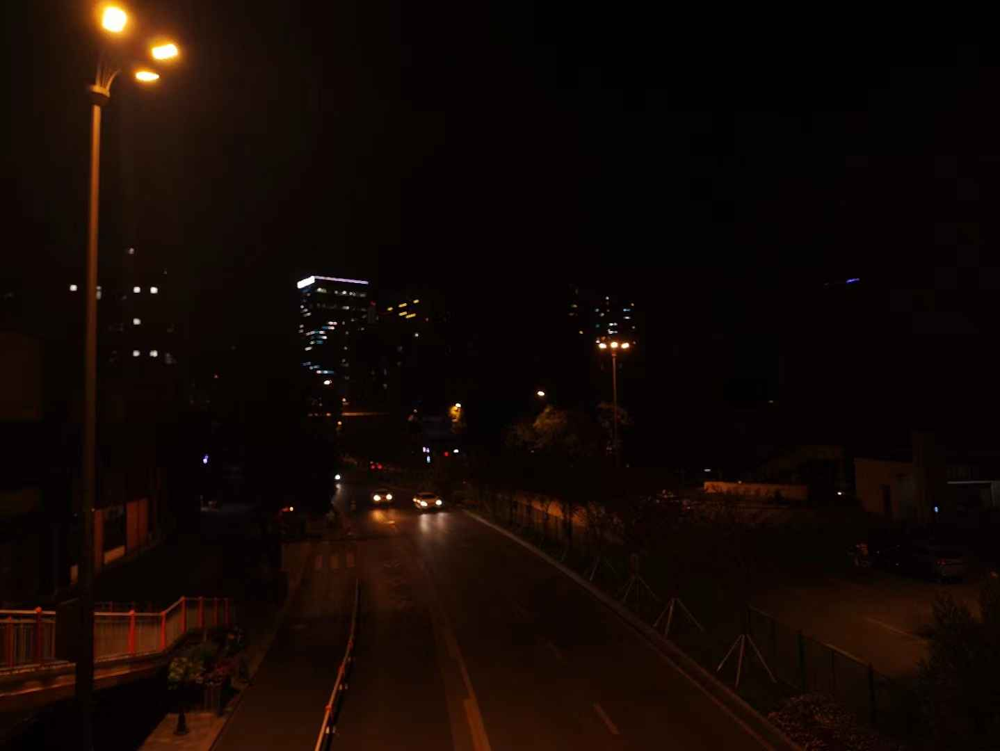

《生活之眼》
欢迎来到我的图片集,这里有我珍藏的照片与图画。
我并不懂摄影，也不懂艺术，对视觉艺术总缺乏一些感受力和创造力，但我深信，图片之中，蕴藏着世界的轮转，蕴藏着真善美，蕴藏着你的我的或任何一个人的人生。
我心中始终有着一个小小的梦想--成为一名摄影师，即便很业余。
如果这些图片使你有所感觉，那我对此感到无比开心与感谢。

欢迎来到我的图片集,这里有我珍藏的照片与图画。
我并不懂摄影，也不懂艺术，对视觉艺术总缺乏一些感受力和创造力，但我深信，图片之中，蕴藏着世界的轮转，蕴藏着真善美，蕴藏着你的我的或任何一个人的人生。
我心中始终有着一个小小的梦想--成为一名摄影师，即便很业余。
如果这些图片使你有所感觉，那我对此感到无比开心与感谢。